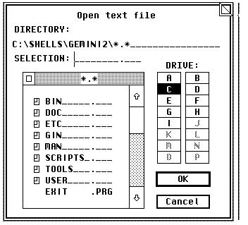

The functions of this library make a file-selector available, which is used for loading and saving files. The following routines are present for this purpose:
| • fsel_boxinput | Selects filename with file-selector (Boxkite) |
| • fsel_exinput | Selects filename with file-selector (AES 1.4 onwards) |
| • fsel_input | Selects filename with file-selector |
| • x_fsel_input | Selects filename with file-selector (Geneva) |
Note: Unfortunately alternative file systems (keyword: long filenames) are not supported; as of MagiC 4 however this is taken over by the functions of the FSLX library.
See also: Extended file-selectors Style guidelines
| Name: | »File selection extended input« - Select filenames.
| ||||||||||||||||||||
| Opcode: | 91
| ||||||||||||||||||||
| Syntax: | int16_t fsel_boxinput ( int16_t *global, int8_t *fs_einpath,
int8_t *fs_einsel, int16_t *fs_eexbutton, int8_t *elabel,
FSEL_CALLBACK callback );
| ||||||||||||||||||||
| Description: | The call fsel_boxinput makes a file-selector dialog box
available, which can also be passed a title string. It is used in an
extended version of the file-selector BoxKite.
The function can be passed the following parameters:
Hint: BoxKite as of Version 2.00 also makes the functions of the MagiC file-selector available. The presence of this call should be checked for using appl_getinfo (opcode 7). | ||||||||||||||||||||
| Return value: | It is imperative that the return value of the function (0 =
error) is respected, as a shortage of memory, for instance, may make
it impossible to use a file-selector.
| ||||||||||||||||||||
| Availability: | If BoxKite from Version 1.71 on is installed. This can be checked
for by the presence of the cookie HBFS. But note that this is also
present for versions earlier than Version 1.71.
| ||||||||||||||||||||
| Group: | File-selector library
| ||||||||||||||||||||
| See also: | Binding XFS-concept in MagiC
|
| C: |
/* Message handler for updating background windows */ typedef void cdecl (* FSEL_CALLBACK)(int16_t *msg); int16_t fsel_boxinput ( int16_t *global, int8_t *fs_einpath, int8_t *fs_einsel, int16_t *fs_eexbutton, int8_t *elabel, FSEL_CALLBACK callback ); | ||||||||||||||||||||||||||||||||||||
| Binding: |
int16_t fsel_boxinput ( int16_t *global, int8_t *fs_einpath, int8_t *fs_einsel, int16_t *fs_eexbutton, int8_t *elabel, FSEL_CALLBACK callback ) { void *aespb[6], *addrin[6], *addrout[6]; int contrl[5], intin[16], intout[7]; aespb[0] = contrl; aespb[1] = global; aespb[2] = intin; aespb[3] = intout; aespb[4] = addrin; aespb[5] = addrout; contrl[0] = 91; contrl[1] = 0; contrl[2] = 2; contrl[3] = 4; contrl[4] = 0; addr_in[0] = fs_einpath; addr_in[1] = fs_einsel; addr_in[2] = elabel; addr_in[3] = callback; _crystal((AESPB *)aespb); *fs_eexbutton = int_out[1]; return ( int_out[0] ); } | ||||||||||||||||||||||||||||||||||||
| GEM-Arrays: |
|
Note: BoxKite requires information from the 'global' array of the main application. The supplied GEM bindings of development systems normally pass this automatically.
| Name: | »File selection extended input« - Select filenames.
| ||||||||||||||||||
| Opcode: | 91
| ||||||||||||||||||
| Syntax: | int16_t fsel_exinput ( int8_t *fs_einpath, int8_t *fs_einsel,
int16_t *fs_eexbutton, int8_t *elabel );
| ||||||||||||||||||
| Description: | The call fsel_exinput makes a system file-selector dialog box
available in which the user may choose a complete GEMDOS path
specification. It may also be passed a title-string that is to appear
in the file-selector (normally indicating the action the user is about
to take).
 The function can be passed the following parameters:
Notes: The function should be nested with wind_update (BEG_MCTRL or END_MCTRL) to prevent double-clicks being passed on to underlying windows. fs_einpath points to a character buffer at least 128 bytes long (200 bytes if CD-ROMs are to be accessed). fs_einsel points to a 13-byte buffer (12 for filename characters plus a terminating NULL). fs_elabel points to a buffer up to 30 characters long. | ||||||||||||||||||
| Return value: | It is imperative that the return value of the function (0 =
error) is respected, as a shortage of memory, for instance, may make
it impossible to use a file-selector.
| ||||||||||||||||||
| Availability: | This function is available only from AES 1.4 onwards.
It is also present in FreeGEM. To check for this feature, use appl_init and check that xbuf.arch is non-zero. If it is available, it should be used rather than the fsel_input call, as with the latter the user is not reminded what the function is actually doing. | ||||||||||||||||||
| Group: | File-selector library
| ||||||||||||||||||
| See also: | Binding fsel_input XFS-concept in MagiC
|
| C: | int16_t fsel_exinput ( int8_t *fs_einpath, int8_t *fs_einsel,
int16_t *fs_eexbutton, int8_t *elabel );
| |||||||||||||||||||||||||||||||||
| Binding: |
int16_t fsel_exinput (int8_t *fs_einpath, int8_t *fs_einsel, int16_t *fs_eexbutton, int8_t *elabel) { addr_in[0] = fs_einpath; addr_in[1] = fs_einsel; addr_in[2] = elabel; crys_if (91); *fs_eexbutton = int_out[1]; return ( int_out[0] ); } | |||||||||||||||||||||||||||||||||
| GEM-Arrays: |
|
| Name: | »File selection input« - Selects filenames.
| ||||||||||||||||
| Opcode: | 90
| ||||||||||||||||
| Syntax: | int16_t fsel_input ( int8_t *fs_iinpath, int8_t *fs_iinsel,
int16_t *fs_iexbutton );
| ||||||||||||||||
| Description: | The call fsel_input makes a file-selector dialog box available:
The following apply:
Notes: The function should be nested with wind_update (BEG_MCTRL or END_MCTRL) to prevent double-clicks being passed on to underlying windows. fs_iinpath points to a character buffer at least 128 bytes long (200 bytes if CD-ROMs are to be accessed). fs_iinsel points to a 13-byte buffer (12 for filename characters plus a terminating NULL). Incidentally, AES versions earlier than 1.4 can only display a maximum of 100 files; there a 'ping' warns if not all files can be displayed. | ||||||||||||||||
| Return value: | It is imperative that the return value of the function (0 =
error) is respected, as a shortage of memory, for instance, may make
it impossible to use a file-selector.
| ||||||||||||||||
| Availability: | All AES versions, not present in ViewMAX/3, and will crash
ViewMAX/2.
| ||||||||||||||||
| Group: | File-selector library
| ||||||||||||||||
| See also: | Binding fsel_exinput XFS-concept in MagiC
|
| C: | int16_t fsel_input ( int8_t *fs_iinpath, int8_t *fs_iinsel,
int16_t *fs_iexbutton );
| ||||||||||||||||||||||||||||||
| Binding: |
int16_t fsel_input (int8_t *fs_iinpath, int8_t *fs_iinsel, int16_t *fs_iexbutton) { addr_in[0] = fs_iinpath; addr_in[1] = fs_iinsel; crys_if (90); *fs_iexbutton = int_out[1]; return ( int_out[0] ); } | ||||||||||||||||||||||||||||||
| GEM-Arrays: |
|
| Name: | »Extended file selector«
| ||||||||||||||||||||||
| Opcode: | 28960
| ||||||||||||||||||||||
| Syntax: | int16_t x_fsel_input( int8_t *inpath, int16_t pathlen, int8_t
*files, int16_t sels, int16_t *exbutton, int8_t *label );
| ||||||||||||||||||||||
| Description: |
This function is similar to fsel_exinput, but has several extensions:
| ||||||||||||||||||||||
| Return value: | 0 = An error occurred
| ||||||||||||||||||||||
| Availability: | The function is only available under Geneva.
| ||||||||||||||||||||||
| Group: | File-selector library
| ||||||||||||||||||||||
| See also: | Binding
|
| C: | int16_t x_fsel_input( int8_t *inpath, int16_t pathlen, int8_t
*files, int16_t sels, int16_t *exbutton, int8_t *label );
| |||||||||||||||||||||||||||||||||||||||
| Binding: |
int16_t x_fsel_input( int8_t *inpath, int16_t pathlen, int8_t *files, int16_t sels, int16_t *exbutton, int8_t *label ) { int_in[0] = pathlen; int_in[1] = sels; addr_in[0] = inpath; addr_in[1] = files; addr_in[2] = label; crys_if(28960); *exbutton = int_out[1]; return ( int_out[0] ); } | |||||||||||||||||||||||||||||||||||||||
| GEM-Arrays: |
|